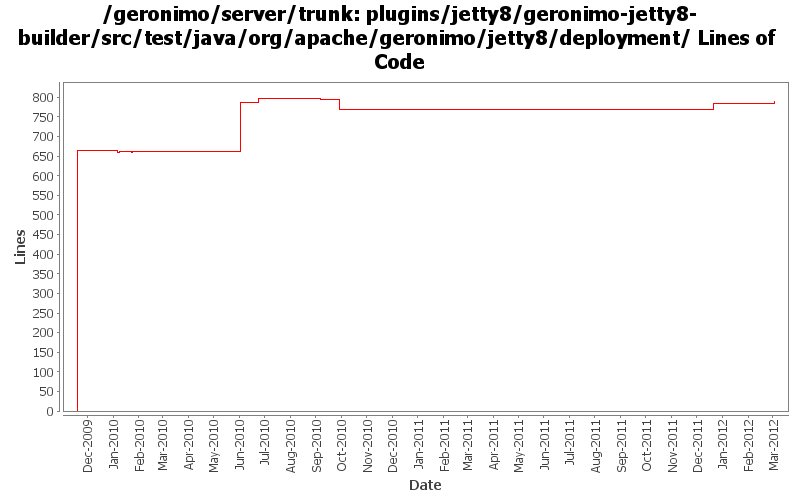

[root]/plugins/jetty8/geronimo-jetty8-builder/src/test/java/org/apache/geronimo/jetty8/deployment

| Author | Changes | Lines of Code | Lines per Change |
|---|---|---|---|
| Totals | 29 (100.0%) | 910 (100.0%) | 31.3 |
| djencks | 20 (69.0%) | 883 (97.0%) | 44.1 |
| xuhaihong | 6 (20.7%) | 20 (2.2%) | 3.3 |
| gawor | 3 (10.3%) | 7 (0.8%) | 2.3 |
GERONIMO-6292 Share the japser servlet between jasper plugin and web-container plugin.
8 lines of code changed in 2 files:
GERONIMO-6240 Modify configs so that they use features as the bootstrap, and fix a few compile and test errors. Servers build but do not fully start
32 lines of code changed in 2 files:
GERONIMO-5624 better default web app merging, and make jetty use more of the info tree
0 lines of code changed in 3 files:
GERONIMO-5567 rewrite jetty integration to use a openejb-like info tree and the *Registration interfaces. This gets everything started in the right order and is a lot simpler. Old code still needs to be removed
6 lines of code changed in 2 files:
cf openejb rev 958340. marshal persistence.xml in the correct namespace, marshal methods names changed
1 lines of code changed in 1 file:
GERONIMO-5190 use openejb-jee jaxb tree for spec dds
45 lines of code changed in 3 files:
GERONIMO-5025, GERONIMO-5117. Make jndi supported directly by Modules and straighten out which contexts are shared when.
128 lines of code changed in 2 files:
GERONIMO-5152 some GBEAN_INfOs aren't there any more
4 lines of code changed in 1 file:
GERONIMO-5057 Use those xmlbeans generated by JAVA EE 6 schema files
3 lines of code changed in 2 files:
GERONIMO-5030: Initial refactoring of some of the module deployment code to support deployment of Bundles. Also, implemented rfc66 extender that can actually deploy WABs with simple servlets and jsps.
7 lines of code changed in 1 file:
add DelegatingBundle that can delegate calls to multiple Bundles and remove classSource support
0 lines of code changed in 2 files:
GERONIMO-5021 allow gbean classes to be loaded from another plugin, plus use in jetty and jasper
2 lines of code changed in 2 files:
GERONIMO-5008 Create util methods for all the Geronimo components
9 lines of code changed in 2 files:
rename jetty7 to jetty8
665 lines of code changed in 4 files: